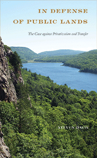

<HTML><head>
<meta name='robots' content='noindex,nofollow' /><script> (function(i,s,o,g,r,a,m){i['GoogleAnalyticsObject']=r;i[r]=i[r]||function(){  (i[r].q=i[r].q||[]).push(arguments)},i[r].l=1*new Date();a=s.createElement(o),  m=s.getElementsByTagName(o)[0];a.async=1;a.src=g;m.parentNode.insertBefore(a,m)   })(window,document,'script','//www.google-analytics.com/analytics.js','ga');   ga('create', 'UA-43183130-1', 'temple.edu');   ga('send', 'pageview'); </script><title>Steven Davis: In Defense of Public Lands - Print</TITLE><link rel="stylesheet" href="../general.css" type="text/css"><SCRIPT LANGUAGE = JAVASCRIPT></SCRIPT></HEAD><BODY LINK="#3152A5" VLINK="#3152A5" ALINK=Gray BGCOLOR=White><CENTER><P CLASS=intro><br>A comprehensive argument for why public land ought to remain firmly in the public's hands<br><br></P></CENTER><br>&nbsp;<!--none//--><Table width="100%" border=0 cellspacing=5><tr><td width="175" align="center"></td><td><h1 class = "booktitle">In Defense of Public Lands</h1> <h1 class = "subtitle">The Case against Privatization and Transfer</h1><h3 class="author">Steven Davis </h3><p class="info">paper EAN: 978-1-4399-1537-0 (ISBN:1-4399-1537-7)</br>$29.95, Jun 18, <font color=#990033>Available</font><br><p class="info">cloth EAN:  978-1-4399-1536-3 (ISBN:1-4399-1536-9)</br>$89.50, Jun 18, <font color=#990033>Available</font><br><p class="info">Electronic Book EAN: 978-1-4399-1538-7 (ISBN:1-4399-1538-5)</br>$29.95, Jun 18, <font color=#990033>Available</font><br><p class="info">294 pp, 5.25 x 8.5, 4&nbsp;figures 14 tables, 11 halftones, 1 map</p></td></tr></table></P></td></tr></table><BR>
	
	
	<BLOCKQUOTE><p>"In Defense of Public Lands <i>delivers exactly what it promises: a forceful defense of public lands at a crucial moment in American history. After presenting the views of critics of public lands, Davis carefully dismantles their arguments and counters with a compelling set of arguments that draw on history, politics, ecology, and economics to show why our public lands are an irreplaceable national treasure."</i><br>&#8212;<b>James Morton Turner</b>, Associate Professor, Wellesley College, and author of <i>The Promise of Wilderness: American Environmental Politics since 1964</i><br></BLOCKQUOTE>
	
	<P><p>Debates continue to rage over the merits or flaws of public land and whether or not it should be privatized-or at least, radically reconfigured in some way. <i>In Defense of Public Lands </i>offers a comprehensive refutation of the market-oriented arguments. Steven Davis passionately advocates that public land ought to remain firmly in the public's hands. He reviews empirical data and theoretical arguments from biological, economic, and political perspectives in order to build a case for why our public lands are an invaluable and irreplaceable asset for the American people. <br><br> <i>In Defense of Public Lands </i>briefly lays out the history and characteristics of public lands at the local, state, and federal levels while examining the numerous policy prescriptions for their privatization or, in the case of federal lands, transfer. He considers the dimensions of environmental health; markets and valuation of public land, the tensions between collective values and individual preferences, the nature and performance of bureaucratic management, and the legitimacy of interest groups and community decision-making. Offering a fair, good faith overview of the privatizers' best arguments before refuting them, this timely book contemplates both the immediate and long-term future of our public lands.<br>
		
		<P CLASS="top"><A HREF="#top">BACK TO TOP</A></P></p><P></P><P></b></p>
	
	<P><h2  class="inpageheading"><A NAME="excerpt"></a>Excerpt</h2>
		<p><A HREF="http://www.temple.edu/tempress/chapters_2400/2470_ch1.pdf">
			Read the Preface (pdf).</A><br>
			
	<P><h2  class="inpageheading"><A NAME="reviews"></a>Reviews</h2>
		
	<p><i>"</i>In Defense of Public Lands <i>is timely, engaging, and persuasive. Davis presents the privatizers' perspective clearly and accurately and then exposes the illogic and folly of their arguments. The myriad data he assembles, coupled with a feisty writing style, offer a comprehensive defense of public lands. The basic argument itself is not new, but both Davis's presentation and his refutation of the privatizers' claims are fresh, compelling, and convincing."</i><br>
		&#8212;<b>Ann O'M. Bowman</b>, Professor and Hazel Davis and Robert Kennedy Endowed Chair, Bush School of Government and Public Service, Texas A&M University, and co-author of <i>Terra Incognita: Vacant Land and Urban Strategies</i><br>
		
		<P CLASS="top"><A HREF="#top">BACK TO TOP</A></P></b></p>

<p><h2 class="inpageheading"><A NAME="contents"></a>
	Contents</h2><P><span style="font-family: 'Verdana';font-size: 13px;" >
	Preface <br/>Acknowledgments <br/> <br/>1. Public Land and Its Discontents <br/>2. Every Man for Himself: The Case for Privatization <br/>3. Getting Serious about Ecology: The Biological Case for Public Lands <br/>4. The Valuation of the Invaluable: The Economic Case for Public Lands <br/>5. The Fundamental Democracy of the Commons: The Political Case for Public Lands, Part 1 <br/>6. A Closer Look at Government: The Political Case for Public Lands, Part 2 <br/>7. The Future of Public Land: Looking Forward in a Time of Peril <br/> <br/>Notes  <br/>Selected Bibliography <br/>Index </span></P>
	
	<P><H2  class="inpageheading"><A NAME="author bio"></a>About the Author(s)</H2><p><b>Steven Davis </b>is a Professor of Political Science and Environmental Studies at Edgewood College in Madison, WI.<br>
		
		<P CLASS="top"><A HREF="#top">BACK TO TOP</A></P></P></P><P><h2 class="inpageheading"><a name="subjects"></a>Subject Categories</h2> <p><a href="http://www.temple.edu/tempress/political.html" target="_top">Political Science and Public Policy</a> <br><a href="http://www.temple.edu/tempress/nature.html" target="_top">Nature and the Environment</a> <br><a href="http://www.temple.edu/tempress/business.html" target="_top">Business/Economics</a> <br><a href="" target="_top"></a> <br><a href="" target="_top"></a> </p></P><P></P>

<P CLASS="top"><A HREF="#top">BACK TO TOP</A></P></td><td width=2%>&nbsp;</td><td width=5>&nbsp;</td></tr></table><BR><font face="Arial" size="1"><a href="copyright.html" OnMouseOver="window.status='Web Copyright Policy';return true;" OnMouseOut="window.status=''" TITLE="Web Copyright Policy">&copy;</a> 2018 <a href="http://www.temple.edu" target="new" OnMouseOver="window.status='Link to Temple University home page';return true;" OnMouseOut="window.status=''" TITLE="Link to Temple University home page">Temple University</a>. All Rights Reserved. This page: http://www.temple.edu/tempress/titles/2470_reg.html</font></BODY></HTML>           